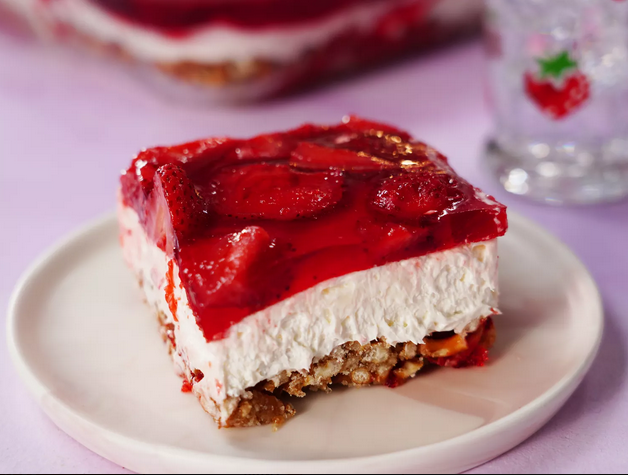

Strawberry Pretzel

Judy's Strawberry Pretzel
This three-layer strawberry pretzel dessert salad includes a pretzel crust, cream cheese center, and strawberry top.
Ingredients
- 1 ½ cups crushed pretzels.
- ¾ cup butter, melted.
- 4 ½ tablespoons white sugar.
- 2 (8 ounce) packages cream cheese, softened.
- 1 cup white sugar.
- 1 (8 ounce) container frozen whipped topping, thawed.
- 2 cups boiling water.
- 1 (6 ounce) package strawberry flavored Jell-O.
- 1 (16 ounce) package frozen strawberries.
Steps
- Gather ingredients, and preheat the oven to 350 degrees F (175 degrees C).
- Mix together pretzels, melted butter, and 4 1/2 tablespoons sugar in a medium bowl until well combined. Press into the bottom of a 9x13-inch dish.
- Press into the bottom of a 9x13 inch pan. Bake for 10 minutes, or until lightly toasted. Set aside to cool completely.
- In a medium bowl, beat the sugar and cream cheese until smooth.
- Fold in whipped topping and spread evenly over the cooled crust. Refrigerate until set, about 30 minutes.
- Stir together boiling water and gelatin mix in a second large bowl. Mix in frozen strawberries; stir until thawed.
- Pour over cream cheese mixture in the dish. Refrigerate until completely chilled, at least 1 hour.
- Refrigerate until completely chilled, at least 1 hour. Slice and enjoy!